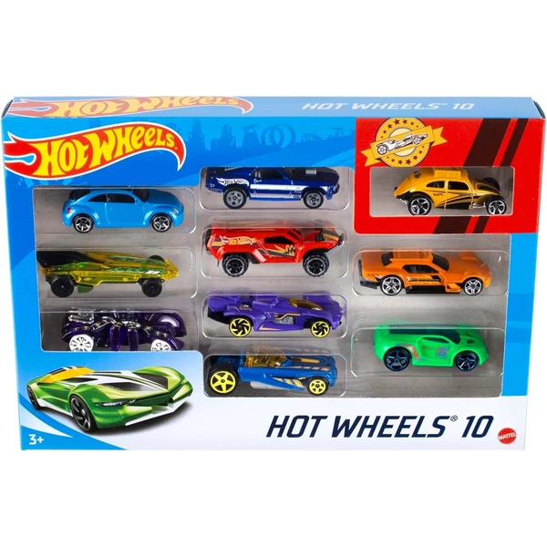

👶 9 años
Hot Wheels Pack de 10 Vehículos
Un pack de 10 coches Hot Wheels a escala 1:64 con modelos surtidos, para tener de golpe una buena base de colección con distintos diseños.
⭐
¿Por qué nos gusta?
- ✔10 coches en un mismo pack.
- ✔Escala 1:64, acabados detallados.
- ✔Modelos variados, buenos para intercambiar.
💬
Lo que más destacan las familias
Muchos padres destacan que es una manera rápida de conseguir un buen surtido para empezar a jugar o coleccionar. La variedad de modelos también engancha, porque siempre hay uno que se convierte en el favorito.